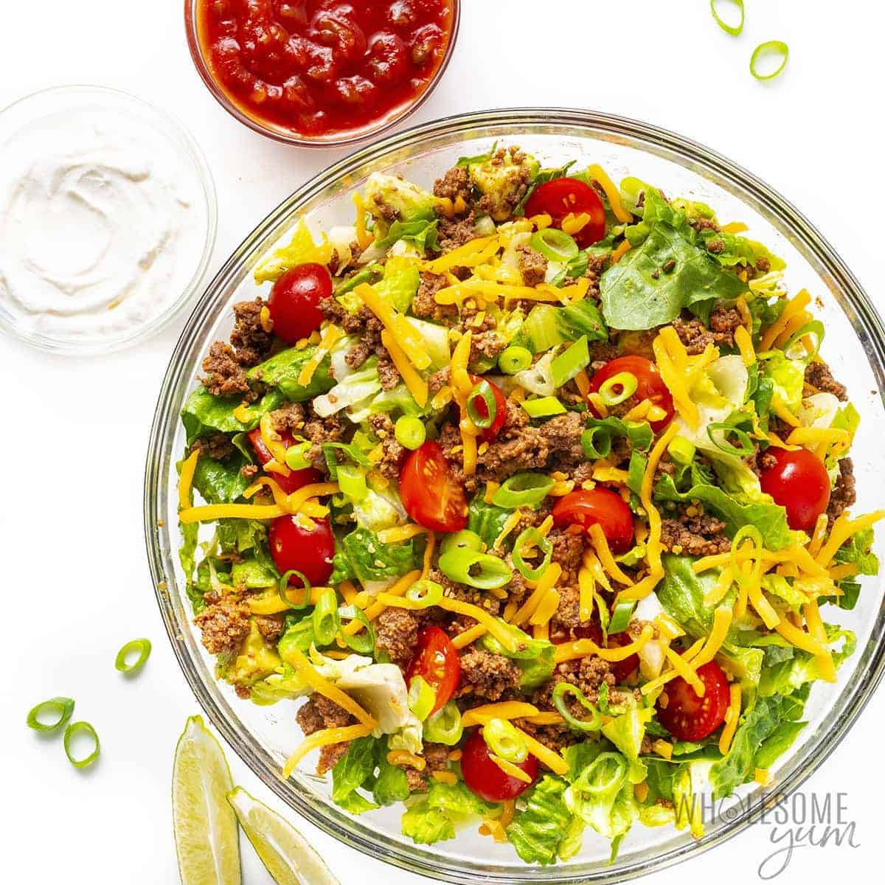

Taco Salad

How To Taco Salad
Making Taco Salad is pretty easy, is what most people think. But the truth is that everyone makes it oh so wrong. Don't believe me? Just think back on the last time you ate a Taco Salad. Wasn't it pretty difficult to keep all of the pieces on the fork or spoon? See! That's what I'm talking about! Follow along and I'll tell you how to properly make taco salad so that it can easily be eaten.
Ingredients
- Meat (cut up into little itsy bitsy pieces)
- Lettuce (cut up into little itsy bitsy pieces)
- Cheese (cut up into little itsy bitsy pieces)
- Tomatoes (cut up into little itsy bitsy pieces)
- Taco shaped tortilla
Steps
- Cook your meat.
- Mix all of your tiny, itsy bitsy cooked meat, letuce, cheese, and tomatoes together in a bowl.
- Before you crunch up that tasty, toasted taco shaped tortilla, fill it with your taco mix from the previous step.
- There! You're done.
- Just eat the hand held taco salad like it was meant to be eaten.
- Regular tacos are so much easier and better than taco salads.
- Get over it.